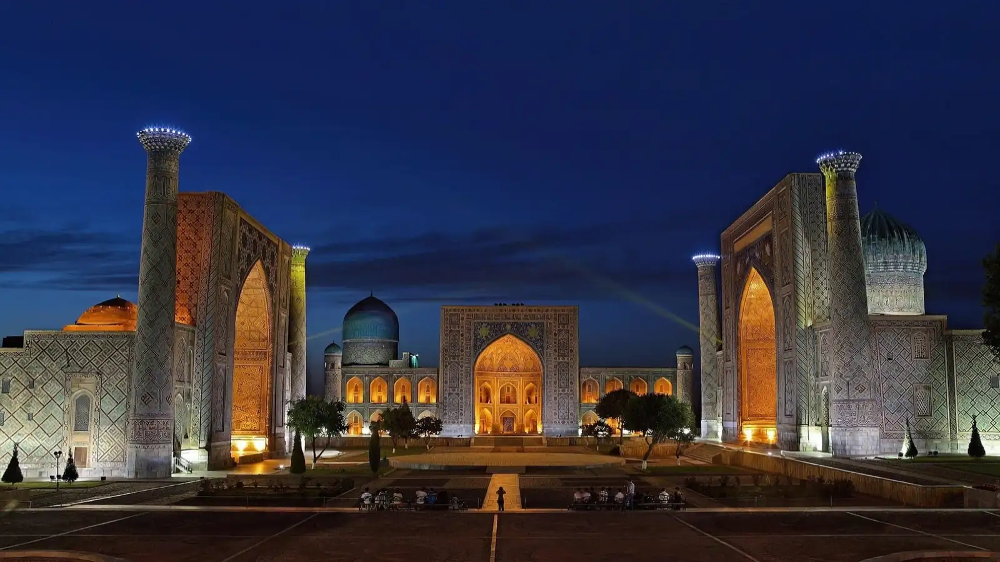

1417–1420
Ulugh Beg
The oldest of the three, on the west side of the square. Built by Ulugh Beg, the astronomer and ruler of Samarkand.

After
dark.
Samarkand, Uzbekistan. Three madrasas, one square, lit every night.
Plan a visit1417–1420
The oldest of the three, on the west side of the square. Built by Ulugh Beg, the astronomer and ruler of Samarkand.
1619–1636
Facing Ulugh Beg across the square. Its portal shows two tigers chasing deer beneath a rising sun.
1646–1660
Closing the north side. It doubled as the city's main mosque, its interior finished in gold.
Registan is part of Samarkand – Crossroad of Cultures, a UNESCO World Heritage Site since 2001. The square is floodlit each evening; check local listings for the light and sound show.